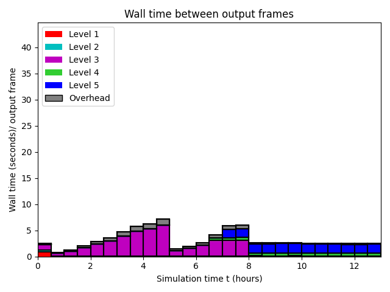

Datetime: 2020-09-04 14:20 From: /Users/rjl/clawpack_src/clawpack_master/apps/tsunami-examples/tohoku2011_hawaii_currents/_output
============================== Timing Data ==============================
Integration Time (stepgrid + BC + overhead)
Level Wall Time (seconds) CPU Time (seconds) Total Cell Updates
1 2.067 2.068 0.112E+06
2 4.800 15.268 0.742E+07
3 191.667 732.608 0.404E+09
4 20.815 74.463 0.442E+08
5 72.910 263.571 0.191E+09
total 292.258 1087.977 0.646E+09
All levels:
stepgrid 287.096 1072.642
BC/ghost cells 4.728 14.829
Regridding 5.668 17.390
Output (valout) 20.973 20.446
Total time: 320.606 1129.060
Using 4 thread(s)
Note: The CPU times are summed over all threads.
Total time includes more than the subroutines listed above
Note: timings are also recorded for each output step
in the file timing.csv.
clock_rate = 1000000000 per second, count_max = 9223372036854775807
clock_start = 1596903424227905000, clock_finish = 1596903744833612000
=========================================================================
